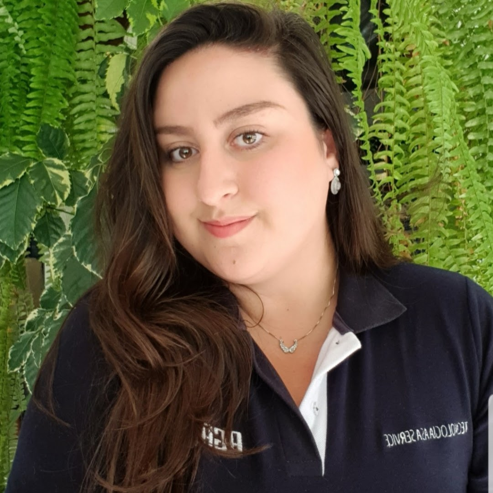

|

|
Movida por desafios, empática, ágil e fascinada por colaboração, encontrei como Product Owner o perfeito equilíbrio entre trabalho e paixão.
Atuo no mercado de trabalho desde 2009, e durante minha adolescência, meus olhos sempre brilharam para tecnologia, me direcionado para cursos de desenvolvimento e design. Porém acabei trabalhando em diversos outros setores, como varejo, educação e saúde, o que acabou me distanciando desse desejo.
Em 2016 tive meu primeiro contato com marketplaces, onde segui atuando até dar início a essa nova jornada em 2021, como PO da Agasus, com o projeto de implantação do nosso e-commerce, conciliando em uma única plataforma todas as unidades de negócio da companhia.
Cursando na época uma formação acadêmica em biológicas, vi esse desejo por atuar com tecnologia novamente se acender em mim durante essa jornada, e como um grande desafio para os próximos anos dei início a formação de Sistemas para Internet na FIAP, em 2022, dez anos após meu último contato com desenvolvimento.
Clique aqui para acessar meu Linkedin!
|